보카보까 VOCAVOCA
책으로 영단어를 보기가 불편하여 만들게 된 영단어 암기 앱입니다.
Flutter를 이용하여 만들었으며, 안드로이드 환경에서 동작합니다.
현재 구글플레이에서 배포 중입니다.
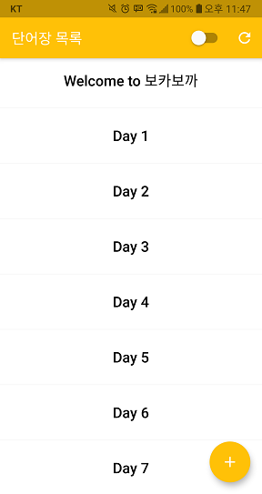앱 메인화면입니다. 처음 실행 시에는 목록이 비어 있습니다.
비어있는 상태에서 새로고침 버튼을 누르면 'Welcome to 보카보까' 기본 단어장이 생성됩니다.
'Welcome to 보카보까' 단어장에는 사전에 등록된 50단어가 나오도록 되어 있습니다.
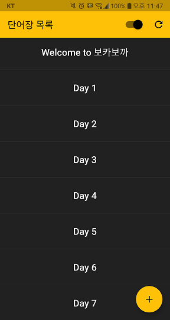메인화면에서 다크모드 설정이 가능합니다.
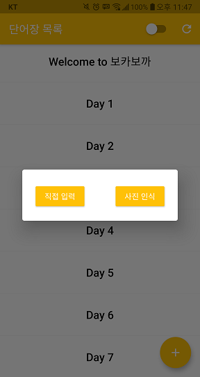+ 버튼을 누르면 단어장을 생성할 수 있습니다.
사용자가 타이핑하여 입력하는 '직접 입력'과 이미지에서 단어를 추출하는 '사진 인식'이 있습니다.
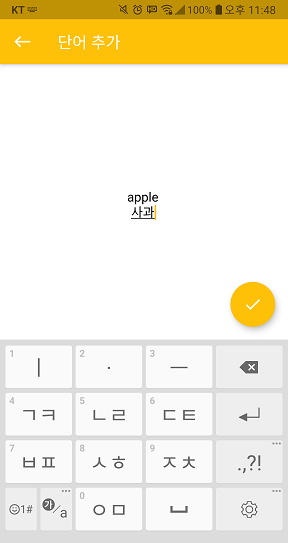홀수 줄은 영단어를 입력하고, 짝수 줄에는 한글을 입력합니다.
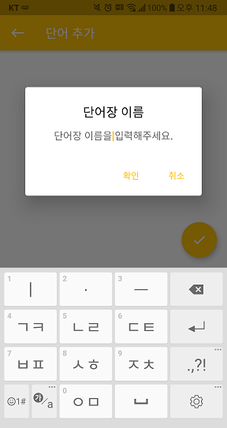 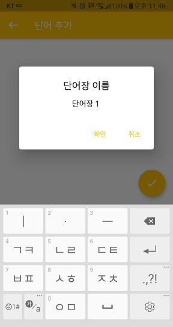체크 버튼을 누르면 단어장 이름을 입력한 뒤 단어장이 생성됩니다.
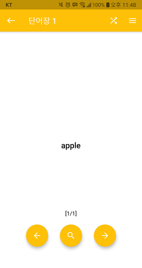돋보기 버튼을 누르면 단어의 뜻이 보이고, 다시 누르면 영단어만 보입니다.
돋보기 버튼을 꾹 누르면 전체 단어에 해당 기능을 적용합니다.
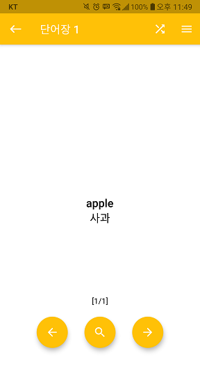 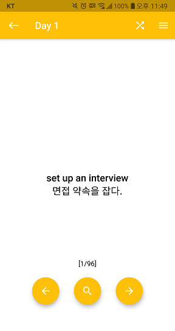상단의 셔플 버튼을 누르면 단어 순서를 무작위로 섞습니다.
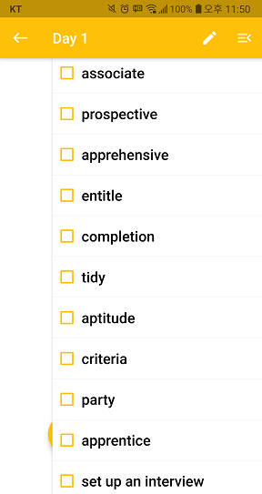목록을 열어 단어를 수정하거나 외운 단어를 체크할 수 있습니다.
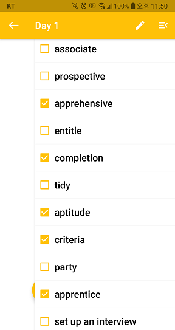단어에 체크 표시하면 해당 단어가 나오지 않습니다.
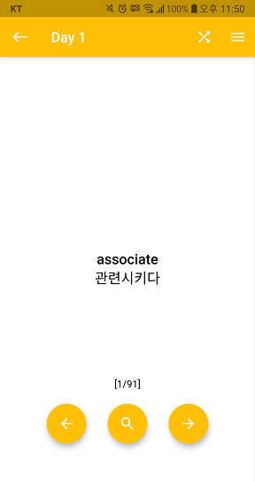 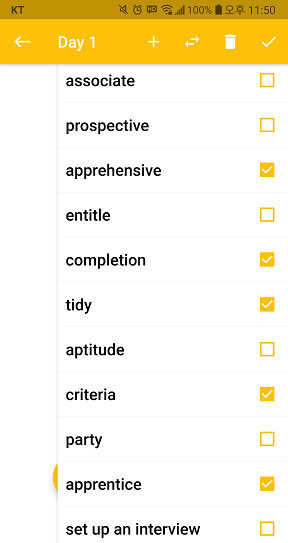수정 버튼을 눌러 단어를 추가, 이동, 삭제할 수 있습니다.
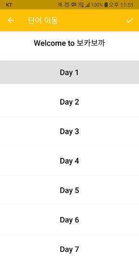현재 단어가 있는 단어장은 회색으로 표시됩니다.
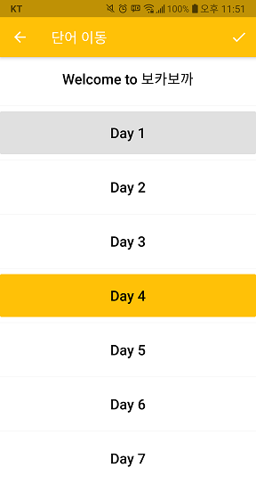이동하려는 단어장을 누르고 체크 버튼을 누르면 단어가 이동됩니다.
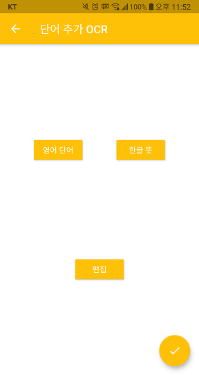Tesseract OCR 라이브러리를 적용하여 이미지에서 텍스트를 추출합니다.
컴퓨터 이미지는 비교적 잘 인식하는 편이나, 일반 사진의 경우는 잘 인식하지 못합니다.